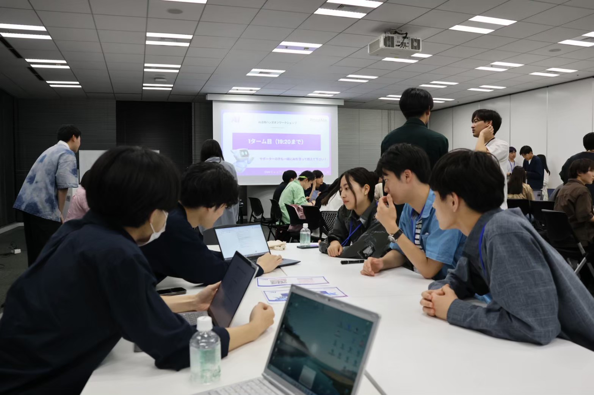
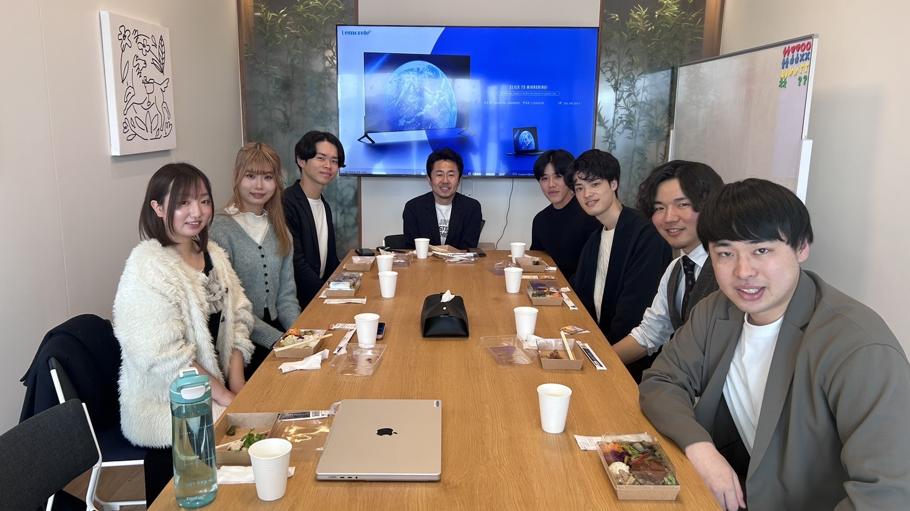
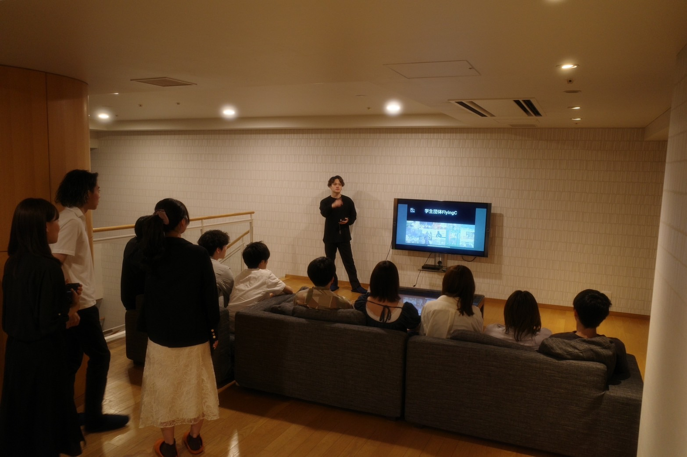
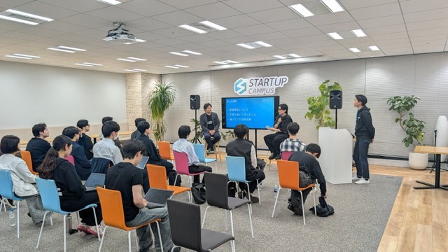

-
 WorkshopAI活用ワークショップ
ChatGPT / 自動化ツールを使った業務改善ミニ課題に挑戦。プロンプト設計→評価→改善を短サイクルで回します。
-
 Study
Study早慶一橋東大理科大合同勉強会
LLMの基礎、API入門、ノーコード連携などを継続開催。コード未経験でも参加しやすいハンズオン形式。
-
Study
オンラインAI勉強会
直近のAIニュースを中心に、最新情報を学生が調査し、プレゼン形式で発表。アウトプットを通して理解を深めます。
-
 Visitオフィスツアーと社長対談
少人数で企業を訪問。業界知見を広げながら、経営者・若手社員から意思決定のリアルを持ち帰ります。
-
 Marketingマーケティング勉強会
ペルソナ/カスタマージャーニー設計からSNS運用・効果測定まで。企画を世に届ける実務を学びます。
-
 Networking起業家交流会
事業づくりの葛藤や意思決定など、生の声を吸収。先輩起業家だけでなく、同年代のコミュニティ形成にも最適です。
-
 Ideathon
Ideathonビジネスアイデアソン
社会課題やテックをテーマに短期集中で企画→検証。メンターのフィードバックで磨き上げ、事業化に挑戦します。